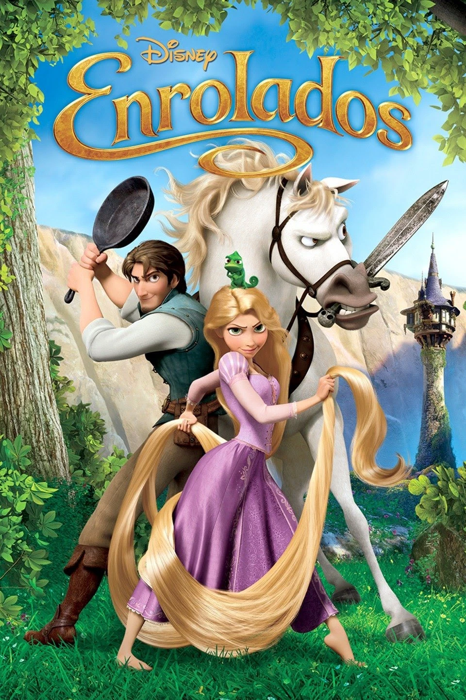

Lista de Livros
| Título do Filme: | Sinopse: | Ano de lançamento: | Indicação etária: | Poster: |
|---|---|---|---|---|
| Lilo & Stitch | O enredo se passa no Havaí, onde duas irmãs órfãs têm suas vidas mudadas para sempre quan- do adotam um cachorro de estima- ção que na verdade é um aliení- gena. |
2002 | Livre | |
| Enrolados | O bandido mais procurado do rei- no, Flynn Rider, se esconde em uma torre e acaba prisioneiro de Rapunzel, residente de longa da- ta do local. Dona de cabelos dou- rados e mágicos com 21 metros de comprimento, ela está trancada há anos e deseja desesperadamente a liberdade. A adolescente deter- minada faz um acordo com o rapaz, e, juntos, partem para uma aven- tura emocionante. |
2011 | Livre |  |
| Toy Story | Se passa num mundo onde os brinquedos têm vida e fingem ser inanimados quando os humanos estão por perto, com o enre- do centrando-se na relação entre Woody, um velho boneco caubói a corda, e Buzz Lightyear, um moderno brinquedo de te- mática espacial. |
1995 | Livre |